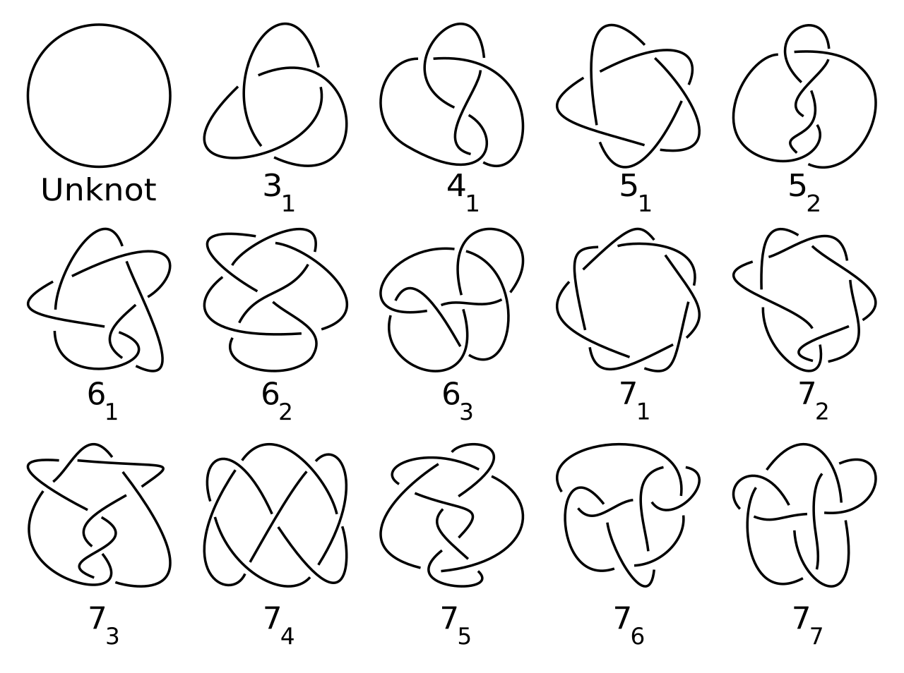

This article seeks to outline the fundamental ideas of knot theory, the topological study of mathematical knots,
first by explaining the basic assumptions of knot theory and then by discussing the concepts of equivalence and knot composition.
It will also include a brief exploration of knot invariants however due to the introductory nature of the article; an explanation
of polynomial knot invariants will not be included.
Assumptions in knot theory
A basic definition of a mathematical knot is a continuous simple closed curve in three-dimensional Euclidean space, R^3. (Livingston, 1996)
As such it can be described as an embedding of a circle in R^3. (Kawauchi, 1996) In order to avoid unnecessary complication, infinitely
looping knots, known as “wild knots” (see figure 1), can be excluded so that only those knots which can be represented using polygonal
curves (which are inherently finite) are considered. (Livingston, 1996) It is also important to limit deformations of knots to being
‘ambient isotopies’, which disallows shrinking any part of the knot into a point in order to eliminate the knot. (Adams, 1994)
Figure 1. Infinitely looping “wild knot” (Murasugi, 1996)
Knot diagrams and equivalence
The most rudimentary mathematical knot is an unknotted circle, known as the unknot or trivial knot, with the next most rudimentary
being the trefoil, (Adams, 1994) which can be displayed using knot diagrams (see figure 2); two-dimensional projections of a given
knot with crossings represented by broken arcs. (Yetter, 2001) Any knot can be deformed into different projections but is still the
same knot (Adams, 1994), for instance, two knots known as ‘Perko’s pair’ (see figure 3) were long thought to be different knots but
could in fact be changed into one another by a finite series of deformations (Murasugi, 1996), therefore any two knots can be said to
be equivalent if they are related by a finite sequence of such deformations known as ‘Reidemeister moves’. (Yetter, 2001) These
‘Reidemeister moves’(see figure 4) consist of: type I moves, twisting or untwisting a section of the knot; type II moves, moving one
section over another; and type III moves, Moving a section over or under a crossing. (Lickorish, 1997)
Figure 2.The unknot (a) and Figure 3. ‘Perko’s pair’ (Murasugi, 1996)
the trefoil (b) (Adams, 1994)
Figure 4. ‘Reidemeister moves’ (Adams et al, 2020)
Prime knots and knot composition
One technique for creating new knots is by taking two existing knots, removing an arc from each knot and conjoining the ends,
the resulting knot is called a ‘composite knot’. (Adams, 1994) In a similar vein, knots which cannot be decomposed into any 2
existing nontrivial knots are called ‘prime knots’ (Livingston, 1993) These ‘prime knots’ are equivalent to arithmetic prime
numbers and thus any knot can be decomposed into a finite number of prime knots. (Murasugi, 1996) Prime knots have been of particular
interest to knot theorists due to their uniqueness (Adams, 1994) and as such many tabulations of these knots, usually ordered by the
number of crossings, into tables exist (see figure 5). So far, all prime knots up to 16 crossings have been tabulated, with around 1.7
million known prime knots. (Hoste et al, 1998)

Figure 5. Knot table of prime knots
up to 7 crossings (Hankin, 2023)
Links
The subject of knot theory also includes the study of links (Livingston, 1993), which are collections of loops that are knotted together
but which do not intersect. (Murasugi, 1996) Just like with knots if 2 projections of a link are equivalent, they are related by a finite
sequence of Reidemeister moves. (Adams, 1994) One link of interest is the so-called ‘Borromean link’ (see figure 7), whose links cannot be
separated by deformation, but if one of the component loops is removed the other 2 split apart. (Livingston, 1993) These such links are called
‘Brunnian’ links. (Livingston, 1993)
Figure 6. The ‘Whitehead link’ (Livingston, 1993) Figure 7. The ‘Borromean link’ (Purcell, 2020)
Knot invariants
An important tool in knot theory is that of ‘knot invariants’ (Kawauchi, 1996), quantities which are the same between equivalent knots.
(Purcell, 2020) Furthermore, for a quantity to be a knot invariant it must not change when performing the elementary knot moves on its
associated knot. (Murasugi, 1996) One relatively simple knot invariant is the crossing number of a knot: the least number of crossings of
any projection of a knot (Lickorish, 1997). For instance, referring back to figure 5, knots 7(1) to 7(7) are related by sharing the same
crossing number of 7. A knot’s crossing number can be determined by taking a projection of a knot, K, with a number of crossings n. From
this it is known that the knot has n crossings or less. Therefore, if the list of all knots with fewer crossings than n is known, and knot
k does not appear on that list, it must have n crossings. (Adams, 1994) One problem in knot theory is determining the difference in complexity
between a given knot and the unknot (Kawauchi, 1996), for this it is useful to use a knot invariant called the ‘unknotting number’. We can do
this by taking a diagram of a nontrivial knot and swapping the over-crossing and under-crossing segments at several crossing points until we
are left with the unknot (see figure 8). (Murasugi, 1996) Thus the unknotting number of any given projection of a knot is the least number of
crossings that would have to be changed to create the unknot. (Adams, 1994) Another useful knot invariant is that of the ‘bridge number’.
Taking a projection of a knot, arcs that go over at least one crossing but not under any crossing are called ‘overpasses’ (Adams, 1994).
Furthermore, such ‘overpasses’ which cannot be made any longer are called ‘maximal overpasses’ (Adams,1994). For a given projection of a knot
the number of ‘maximal overpasses’ is called the ‘bridge number’ (Murasugi, 1996)
Figure 8. An ‘unknotting operation’ (Murasugi, 1996)
 Figure 1. Infinitely looping “wild knot” (Murasugi, 1996)
Figure 1. Infinitely looping “wild knot” (Murasugi, 1996)


 Figure 2.The unknot (a) and Figure 3. ‘Perko’s pair’ (Murasugi, 1996)
the trefoil (b) (Adams, 1994)
Figure 2.The unknot (a) and Figure 3. ‘Perko’s pair’ (Murasugi, 1996)
the trefoil (b) (Adams, 1994)
 Figure 4. ‘Reidemeister moves’ (Adams et al, 2020)
Figure 4. ‘Reidemeister moves’ (Adams et al, 2020)

 Figure 6. The ‘Whitehead link’ (Livingston, 1993) Figure 7. The ‘Borromean link’ (Purcell, 2020)
Figure 6. The ‘Whitehead link’ (Livingston, 1993) Figure 7. The ‘Borromean link’ (Purcell, 2020)
 Figure 8. An ‘unknotting operation’ (Murasugi, 1996)
Figure 8. An ‘unknotting operation’ (Murasugi, 1996)